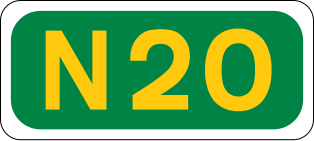
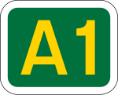
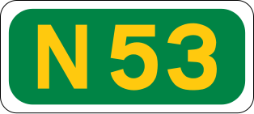
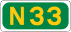

Yes, you are correct! Most of the road is either the  or the
or the  !
!
But, the big question is, why is it?
Well, the old route used to go along the lines of the ! It's because the goverment just can't magically create motorways/dual carriageways out of thin air (although that would be very convenient). Take a look at the

. You see, the road there, yeah, that will soon be slower than the upcoming extension of the already existing motorway to ease traffic in the towns on the . You see the idea here?
So, wanna learn about the  ? We got you! (If you would like to learn about the original , please go to the page.)
? We got you! (If you would like to learn about the original , please go to the page.)
The  starts at Junction 3 of the and bypasses the following towns/cities:
starts at Junction 3 of the and bypasses the following towns/cities:
At the north of Dundalk at Junction 18, the  transitions into the , then just past Junction 20, it transitions into the Northern Irish route, the
transitions into the , then just past Junction 20, it transitions into the Northern Irish route, the

towards Newry and Belfast.The  was built in short and sometimes disconnected bypasses, which ultimately replaced the old route.
was built in short and sometimes disconnected bypasses, which ultimately replaced the old route.
The first part of the motorway was built in 1983, just to bypass Santry. The second part was completed at 1985 and went up to now is Junction 2, and this section back then was called "The Airport Motorway", which is pretty obvious by it's name. Then around 8 years later, a disconnected bypass was completed at 1993, bypassing Dunleer. However, Drogheda wasn't bypassed at the time so the town was still very busy. Even more strangely, Balbriggan was bypassed in 1998, but Drogheda was still not bypassed. Then the largest section opened to the public in 2001, streching from Dunleer to Dundalk. HOWEVER, Drogheda was STILL not bypassed?! What?! It wouldn't be until 2003 where Drogheda got a bypass of its own. It took out 15,000 vehicles out of Drogheda's town centre! The same year, a link between the Airport and Balbriggan was opened, making traffic from Dublin to Dundalk not stop once! Dundalk didn't have a bypass until 2005 (sheesh, 22 years?) and finally, at 2007, a link between the and the was built, completing the / route. Which means people from Dublin Port can go straight to Hillsborough Roundabout on the , Just west of Hillsborough.
route. Which means people from Dublin Port can go straight to Hillsborough Roundabout on the , Just west of Hillsborough.
/From Junction 20 to 1
Jonesborough B113 |
 |
|
|
 |
Ravensdale |
|
 |
Carlingford |
Castleblayney |
 |
Dundalk |
Mullingar |
 |
Dundalk |
 |
||
Tallanstown |
 |
Castlebellingham |
Adree |
 |
Drumcar L2226 |
Ardee |
 |
Castlebellingham |
Collon |
 |
Dunleer |
Tinure L6292 |
 |
Dunleer |
Collon |
 |
Drogheda |
Donore L1601 |
 |
Drogheda L1601 |
Duleek |
 |
Drogheda |
 |
||
 |
Julianstown |
|
Naul |
 |
Balbriggan |
Walshestown L1140 |
 |
Lusk |
|
||
Swords |
 |
Rush |
Ashbourne |
 |
|
Dublin Airport |
 |
|
|
 |
Malahide |